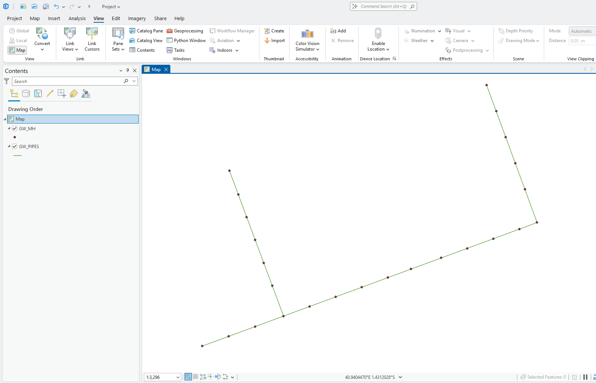
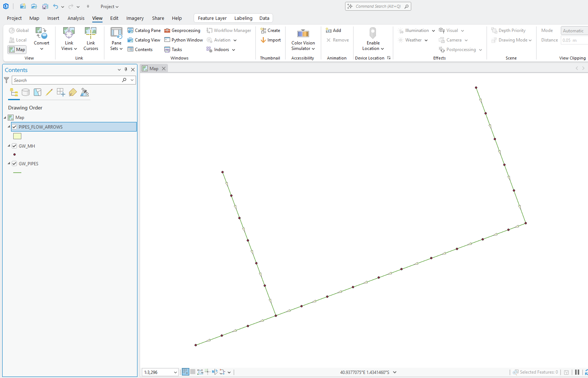

INFRASTRUCTURE GRAVITY NETWORKS FLOW ARROW & QA/QC AUDITING ENGINE
أداة برمجية متطورة ومستقلة (.pyt) مخصصة لبيئة نظم المعلومات الجغرافية (ArcGIS). تعمل على بناء طبقة أسهم اتجاه تعبر عن سريان شبكات المواسير بالجاذبية (صرف صحي، صرف مطري، مياه جوفية)، بالاعتماد الدقيق على اتجاه الرسم وتمركز مركز الثقل في منتصف الماسورة، مع فحص آلي للمناسيب لكشف المواسير المعكوسة فوراً.
100%
توافق تام ArcMap & Pro
.pyt
أداة مستقلة متكاملة
Start➡️End
توجيه دقيق باتجاه الرسم
Centroid
محاذاة مركز ثقل السهم
Auto-QA
كشف السريان العكسي
MIT
مفتوح المصدر بالكامل
صُممت الأداة خصيصاً لحل المشكلات الحرجة التي تواجه مهندسي ومختصي نظم المعلومات الجغرافية في شبكات البنية التحتية بالجاذبية الأرضية؛ حيث تحول فحص الشبكة من ساعات طويلة من التتبع اليدوي إلى مخرجات بصرية وهندسية فورية.
لا تكتفي الأداة برسم مثلث عشوائي، بل تحسب مركز ثقل المثلث رياضياً (Centroid) وتعيد إزاحته بحيث ينطبق مركز ثقل السهم بدقة متناهية على نقطة منتصف الماسورة تماماً دون أي تشوه بصري.
السهم ينطلق دائماً من بداية الخط لنهايته. إذا أشار السهم بعكس انحدار الأرض أو المصب، فهذا إثبات فوري بأن الماسورة رُسمت بالمقلوب ويجب تصحيحها فوراً عبر Flip Line.
حساب زاوية المماس اللحظي عند نقطة المنتصف بدلاً من الاعتماد السطحي على طرفي الخط، مما يضمن اتجاه السهم بسلاسة تامة ومحاذاة طبيعية حتى مع المواسير المنحنية والمتعرجة.
يتم نسخ جميع سمات الماسورة (رقم الماسورة، القطر، المادة، الطول، الميل، المناسيب) إلى طبقة الأسهم الناتجة، مع إضافة معرف الخط الأصلي (ORIG_FID) لسهولة الاستعلام والتسميات.
إذا احتوت الطبقة على مناسيب القاع (ST_INV_M و END_INV_M)، تفحص الأداة انحدار كل ماسورة تلقائياً وتضع وسماً تحذيرياً REVERSED للمواسير التي تم رسمها بعكس الجاذبية.
تتعرف الأداة تلقائياً على واجهة ArcMap أو ArcGIS Pro وتضيف الطبقة فور انتهاء المعالجة إلى جدول المحتويات والخريطة النشطة دون أي تدخل يدوي من المستخدم.
في شبكات المياه المضغوطة (Pressurized Networks) يمكن للمياه أن تجري في أي اتجاه، ولكن في شبكات الجاذبية هناك مسار إجباري واحد يحكمه انحدار التضاريس.
عند استيراد شبكات البنية التحتية من مخططات الأوتوكاد (CAD Drawings) أو الرفع المساحي الميداني، غالباً ما يقوم الرسامون برسم الخطوط بطريقة عشوائية (مثلاً من أسفل لأعلى، أو من اليمين لليسار حسب زاوية الرؤية). هذا يسبب مشاكل جسيمة في:
تقوم الأداة بتوليد سهم يعبر بصرياً عن اتجاه الخط الفعلي. بمجرد إلقاء نظرة على الخريطة:
Flip Line لتصحيحها في ثوانٍ.
شاهد كيف تحول الأداة شبكة المواسير الصامتة إلى خريطة تفاعلية واضحة الاتجاهات وكاشفة للمواسير المرسومة باتجاه عكسي.

المواسير تظهر كخطوط مجردة لا يمكن للعين البشرية أو للتحليلات الهيدروليكية تمييز اتجاه سريانها أو اكتشاف الأخطاء فيها.

تم توليد أسهم متجهة بمنتصف كل ماسورة، ونقل كافة البيانات، مع تمييز وتحديد أي ماسورة مرسومة بعكس اتجاه الجاذبية بدقة.
صيغ رياضية دقيقة مبنية على حساب المثلثات والمماسات الموضعية وهندسة مراكز الثقل.
استخراج نقطة قبل المنتصف (49%) ونقطة بعد المنتصف (51%) وحساب زاوية الاتجاه بالراديان:
إزاحة نقطتي القاعدة يميناً ويساراً بنصف العرض، وإسقاط رأس السهم للأمام بطول الارتفاع:
حساب مركز ثقل المثلث ونقله ليتطابق مع منتصف الماسورة تماماً:
مقارنة مناسيب القاع؛ إذا كان منسوب البداية أقل من النهاية يُوسم السهم بـ REVERSED:
تم تصميم واجهة الأداة لتكون سهلة وبديهية للغاية مع قيم افتراضية مثالية تناسب غالبية مقاييس الرسم.
| # | البارامتر | النوع | الحالة | الوصف والاستخدام |
|---|---|---|---|---|
| 0 | Input Pipes Layer | Feature Layer | مطلوب | طبقة خطوط شبكة المواسير المفتوحة بالخريطة أو ملف Shapefile / Feature Class. |
| 1 | Output Geodatabase | Workspace / GDB | مطلوب | مسار قاعدة البيانات الجغرافية (.gdb) التي سيتم حفظ الطبقة الناتجة بداخلها. |
| 2 | Output Layer Name | String | مطلوب | اسم طبقة أسهم الاتجاه الناتجة (افتراضي: PIPES_FLOW_ARROWS). |
| 3 | Arrow Base Width | Double | مطلوب | عرض قاعدة مثلث السهم بالمتر بوحدة الخريطة (افتراضي: 2.0 متر). |
| 4 | Arrow Height/Length | Double | مطلوب | ارتفاع / طول السهم من القاعدة إلى الرأس بالمتر (افتراضي: 5.0 متر). |
| 5 | Transfer Attributes | Boolean | اختياري | نسخ جميع حقول وسمات الماسورة الأصلية لطبقة الأسهم لتمكين التسمية والاستعلام. |
لا تتطلب الأداة أي تثبيت معقد؛ فقط أضف صندوق الأدوات CreateFlowArrow.pyt مباشرة لبرنامجك.
من نافذة Catalog في ArcMap أو ArcGIS Pro، انقر بزر الفأرة الأيمن على Toolboxes واختر Add Toolbox، ثم حدد ملف CreateFlowArrow.pyt.
اختر طبقة خطوط المواسير، وحدد مسار الـ Geodatabase واسم الطبقة وأبعاد السهم المناسبة لمقياس رسم خريطتك.
اضغط Run أو OK؛ ستتولى الخوارزمية بناء الأسهم وإضافتها فوراً للخريطة النشطة وجدول المحتويات مع تدقيق الجودة.
الأداة مفتوحة المصدر بالكامل ومتاحة للتحميل والاستخدام الحر تحت رخصة MIT.
صندوق الأدوات البرمجي المتكامل (.pyt) الجاهز للعمل مباشرة في ArcMap و ArcGIS Pro دون أي إعدادات وسيطة.
كود السكربت المطور ليعمل تلقائياً مع صناديق الأدوات الكلاسيكية (.tbx) ومشاريع الجيوسينج المستقلة.
دليل المستخدم الفني والهندسي باللغة العربية يشمل التثبيت والبارامترات وأسرار تدقيق جودة الشبكات.